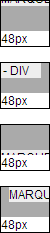
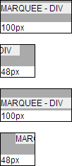
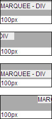

MARQUEE 元素不属于 W3C 规范中的元素，它最初由 IE2.0 引入，是微软为 IE 浏览器发明的特有元素，然而目前所有的主流浏览器均支持 MARQUEE 元素。
MARQUEE 元素用来创建一个文字滚动区域，并提供了一些特有的属性、方法及事件。
关于 MARQUEE 元素的详细资料，请参考 MSDN、Mozilla Developer Center、Safari Reference Library 中的内容。
对于一个 'width' 特性的计算值为 auto 的 MARQUEE 元素，其内包含一个设有较大宽度的块级元素，MARQUEE 元素位于表格内或者 'display' 特性为 table 类型的元素内，则在 IE8(S), Firefox, Opera 中，当 MARQUEE 元素的 direction 属性为 up 或 down（即垂直方向滚动）时，计算的表格单元格的宽度会参考 MARQUEE 内明确设置了宽度的块级元素的宽度。而在 Chrome 和 Safari 中，无论 MARQUEE 元素的 direction 属性为何值（即无论何种滚动方向），计算的表格单元格的宽度始终会参考 MARQUEE 内明确设置了宽度的块级元素的宽度。
在表格单元格的宽度小于 MARQUEE 元素内确设置了宽度的块级元素的宽度时，将导致表格被成大，造成表格布局的布局出现兼容性问题。
| IE8(S) Firefox Opera | 当 MARQUEE 元素的 direction 属性为 up 或 down（即垂直方向滚动）时，计算的表格单元格的宽度会参考 MARQUEE 元素内明确设置了宽度的块级元素的宽度。 |
|---|---|
| Chrome Safari | 无论 MARQUEE 元素的 direction 属性为何值（即无论何种滚动方向），计算的表格单元格的宽度始终会参考 MARQUEE 元素内明确设置了宽度的块级元素的宽度。 |
分析以下代码：
<style> * { font:12px Arial; } marquee { background:#aaa; height:30px; vertical-align:top; }
table { table-layout:auto;1 } </style> <script>
window.onload = function () { var m = document.getElementsByTagName("marquee"); for (var i = 0, j =
m.length; i < j; i++) { var n = m[i].parentNode.parentNode.nextElementSibling ||
m[i].parentNode.parentNode.nextSibling; var o = n.firstElementChild || n.firstChild; o.innerHTML =
m[i].offsetWidth + "px"; } } </script> <table style="border:1px solid black; width:50px;" cellspacing="0" cellpadding="0"> <tr> <td> <marquee
direction="up" scrolldelay="30" scrollamount="1"> <div style="width:100px; background:#eee;">MARQUEE - DIV</div> </marquee>
</td> </tr> <tr> <td> </td> </tr> </table> <br
/> <table style="border:1px solid black; width:50px;" cellspacing="0"
cellpadding="0"> <tr> <td> <marquee direction="right"
scrolldelay="30" scrollamount="1"> <div style="width:100px;
background:#eee;">MARQUEE - DIV</div> </marquee> </td> </tr> <tr>
<td> </td> </tr> </table> <br /> <table style="border:1px
solid black; width:50px;" cellspacing="0" cellpadding="0"> <tr>
<td> <marquee direction="down" scrolldelay="30" scrollamount="1">
<div style="width:100px; background:#eee;">MARQUEE - DIV</div>
</marquee> </td> </tr> <tr> <td> </td> </tr>
</table> <br /> <table style="border:1px solid black; width:50px;" cellspacing="0" cellpadding="0"> <tr> <td> <marquee
direction="left" scrolldelay="30" scrollamount="1"> <div style="width:100px; background:#eee;">MARQUEE - DIV</div> </marquee>
</td> </tr> <tr> <td> </td> </tr> </table>
上面四组代码的结构完全相同，均为一个宽度为 50px 的两行一列的 TABLE2 元素内包含一个没有设置宽度的 MARQUEE
元素，MARQUEE 元素内部包含了一个宽度为 100px 的 DIV 元素。
这四组代码中，MARQUEE 元素的 direction 属性为别为 up、right、down、left。
页面加载后分别计算出这四个 MARQUEE 元素的 offsetWidth 并显示到第二行的 TD 元素中。
这段代码在不同的浏览器环境中表现如下：
| IE6 IE7 IE8(Q) | IE8(S) Firefox Opera | Chrome Safari |
|---|---|---|
|  |  |  |
TABLE 的宽度计算与一般的块级元素有很大不同，当表格使用自动布局算法时（table-layout:auto），我们为其设置的 'width' 特性并不一定就是其最终计算后的宽度。由于不能使表格内各单元格的内容溢出，表格有可能会被单元格撑大。
MARQUEE 元素没有设置宽度，则其 'width' 特性的计算值为默认的 auto，从现象截图中可以看到，
【注】
1. 对于固定布局的表格算法（table-layout:fixed）则各浏览器均不会再参考 MARQUEE 元素的子元素的宽度。
2. 此现在在 'display' 特性为 table 的其他非 TABLE 元素中同样存在。
总是为 MARQUEE 元素显式地设定一个宽度。
| 操作系统版本: | Windows 7 Ultimate build 7600 |
|---|---|
| 浏览器版本: |
IE6
IE7 IE8 Firefox 3.6.3 Chrome 6.0.401.1 dev Safari 4.0.5 Opera 10.60 |
| 测试页面: | table_marquee.html |
| 本文更新时间: | 2010-07-30 |
MARQUEE width 宽度 TABLE 表格 cell TD direction left right up down 滚动 方向